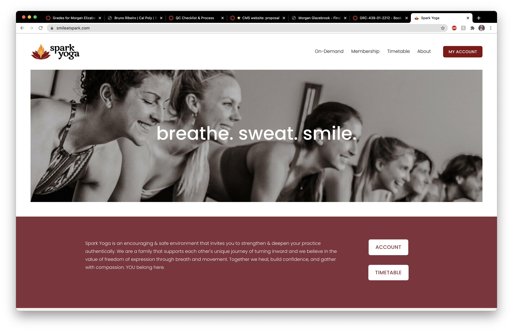
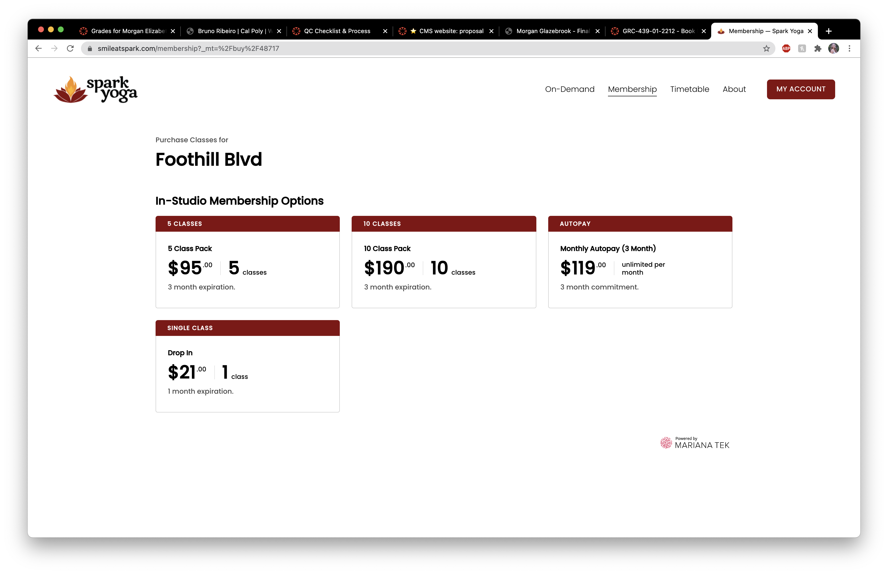
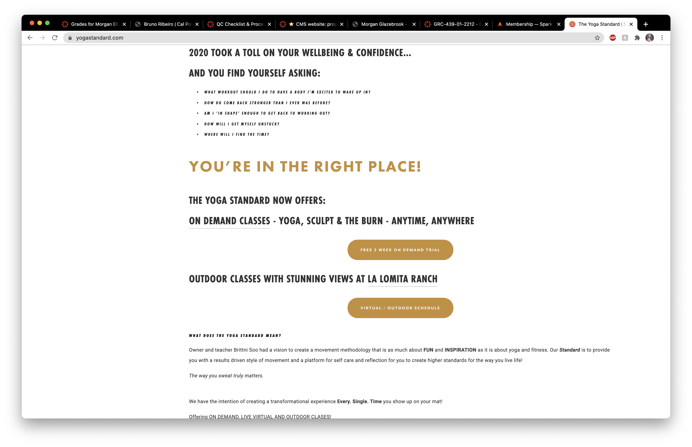

Final project proposal
Introduction
SLOga Studios
SLOga Studios is a fictional Yoga Studio that is located in the heart of San Luis Obispo. We have been located on Higuera Street for the past two years and offere a variety of Yoga classes, varrying from beginner level to advanced. We also offer specialty classes like couple's yoga and hot yoga on the weekends.
Target audience
Our target audience is truly anyone that is looking to get more active, remain active or even pick up a new hobby. We offer classes that are good for beginners, intermediate, and experts. In addition, we are a family friendly studio so we encourage kids to come as well with their parents. Therefore, anyone interested in Yoga from parents, to students, to single people, to children are welcome to come to our studio and we will match them with a class that best aligns with their expertise and interest level.
Their primary tasks and goals of using our website would to be able to look at the classes ahead of time and be able to reserve a spot in our studios. We do accept drop ins, but we cannot guarantee that the class will have any open spots. However, people can visit our website browse through the various types of classes we offer and can also reserve a spot up to three days before the class. This allows people to plan their schedule accordingly and will also allow people to get a better sense of the class that they are signing up for.
Comparative analysis
Slo Yoga Center


Spark Yoga
 Yoga Standard

Website content
Class Descriptions
The Burn
Spicy and fun with two intentions: get inspired and burn calories! We take the guess work out of the BURNING question that we all ponder when sweating… "is it worth it." We use use the latest technology chest strap heart rate monitors with personalized goals to insure you hit your target heart rate and reap the benefits of your hard work. This results-driven class infuses yoga, cardio and positive affirmations to not only change your physical body but, more importantly, your life. We look at our body as a vessel to inspire other aspects of our lives and take this as an opportunity to remind ourselves that we are limitless! This class is not heated but definitely expect to sweat with intense body weight exercises. And don't you worry, there's always a low impact option! Water, towel & high fives are highly recommended!
Multiple People doing a Yoga Move
The Sculpt
You may have heard of Yoga Sculpt or even tried it, but not like this. Our fusion of yoga, weights, isometric exercise, cardio and epic beats is a non-stop party that will have you begging for more! We begin and end each class with yoga to utilize the physical and mental transformative qualities, and incorporate hand weights and bands throughout the class to tone and define your physical body. TYS Sculpt is a carefully structured class with our unique science-based methodology to invigorate and get you the best results possible in a safe and supportive environment. The room is slightly heated, so bring a towel!
The Flow
Our signature heated class inspired by Power Yoga and Vinyasa, we curate an upbeat playlist to keep you inspired and in the moment. We love to switch it up with creative sequences, and take time to break down fun postures in our welcoming environment. Beginner or advanced, this class gives you the opportunity to grow at your own pace with the support of our magnetic teachers, who are there to motivate you to find your inner potential.
The Detox
This class is hot, slow and potent, with strategic postures designed to detoxify your internal organs, open up your body and purify your mind. Expect to sweat away anything that is holding you back and leave feeling freshy-fresh and renewed. The detox is a perfect complement to your regular yoga and fitness routine and is the best way to let go of tension. Beginner-friendly and great for those working with injuries or sore muscles, because you won’t find any chaturangas here! (YASSS)! No experience necessary, BOO YA!
HOT 90
The authentic series of twenty-six Hatha Yoga postures and two breathing exercises designed to provide a challenging, invigorating, rejuvenating and effective yoga experience for all levels. Conducted in an infrared heated room with humidity, this series works strategically thru specific postures and detoxifies the body on a cellular level, and tones the muscles. Whatever your age, injury, or prior yoga experience (if any at all), this yoga will benefit your body and mind in ways you never imagined possible! Come in to sweat, laugh, detox and learn about yourself and your body. You will work your body inside-out, bones to skin, fingertips to toes and leave smiling, feeling lighter with a new found energy and calmness.
One person doing a Hot Yoga Pose
Membership Options
This will be an image of a group of people in a yoga studio smiling together
5 Class Pack
$95.00 for five classes
3 month expiration
10 Class Pack
$190.00 for ten classes
3 month expiration
Monthly Autopay
$119.00 a month
3 month minimum commitment
Single Class
$21.00 for one class
Drop ins welcome
1 month expiration
Meet Our Instructors
Camille Cotter
Hi, I am Camille and I have been practicing Yoga for 10 years now! I am 33 years old and love spending time with my husband Tim and my son Josh. When I am not at the studios I enjoy going on hikes around Slo, reading non-fiction books, and singing and playing my guitar. I teach the Hot 90, The Flow, and The Detox classes here at SLOga! I love meeting new people and hope to see you in one of my classes soon!
Image of a woman named Camille Cotter (profile Picture)
Katie Aruiza
Hello!! My name is Katie and I have been practicing yoga for 12 years! I started working at SLOga when they first opened and have loved every second of my time here. The energy at our studio is immaculate and I love coming to work everyday. When I am not practicing yoga, I enjoy long walks on the beach and spending time with my two Border Collies, Kiko and Teva. Here at SLOga I teach The Sculpt and The Burn! I hope to see you in my classes!
Image of a woman named Katie Aruiza (profile Picture)
Sage Hurt
Hey I am Sage! I have been practicing Yoga for the past 5 years and I am a brand new instructor here at SLOga Studios. I have already really enjoyed my short but amazing time here and cannot wait to make more radical memories with my fellow Yogis! In my free time, I am always outdoors whether I am surfing, backpacking, or slacklining. I am a very adventurous person and live for the thrill. Here at SLOga I teach Hot 90, The Burn, and the Sculpt.
Image of a man named Sage Hurt (profile Picture)
Shane Tomac
Yo! My name is Shane and I have been practicing yoga for the past 23 years. I have worked at studios across the world including in Asia, Australia, and Europe. I love exploring new cultures and learning about new practices of Yoga. Throughout my time as an instructor I have also picked up some other passions such as eating really great food, paddleboarding, and riding my motorcycle. I am extremely passionate about all things health and wellness and would love to talk to you about any questions you may have. I teach The Detox, The Flow, and The Burn.
Image of a man named Shane Tomac (profile picture)
Contact Us!
There will be a photo of a phone
We are located at:
123 Higuera Avenue
San Luis Obispo, CA 94305
Call Us!
(805) 99S-LOGA
Email Us!
slogastudios@gmail.com
Follow Us!
@slogastudios on Instagram and Twitter